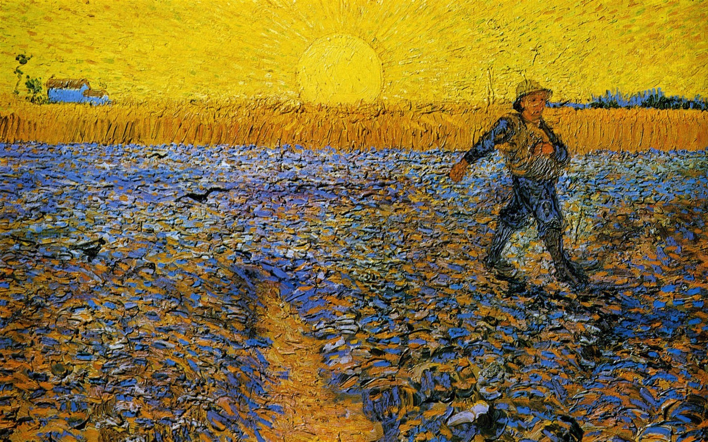
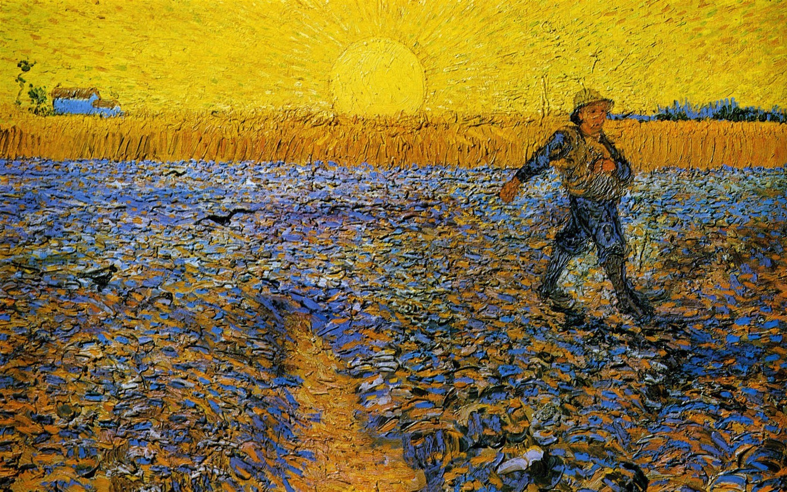

Винсе́нт Ви́ллем Ван ГогРодился 30 марта 1853 года в деревушке Грот-Зюндерт (нидерл. Groot Zundert) в провинции Северный Брабант на юге Нидерландов, недалеко от бельгийской границы. Отцом Винсента был Теодор Ван Гог (родился 08.02.1822), пастор реформатской церкви, а матерью — Анна Корнелия Карбентус, дочь почтенного переплётчика и продавца книг из Гааги. Винсент был вторым по старшинству из семи детей Теодора и Анны Корнелии. Своё имя он получил в честь деда по отцовской линии, который также всю свою жизнь посвятил протестантской церкви. Это имя предназначалось для первого ребёнка Теодора и Анны, который родился на год раньше Винсента, но умер, не прожив и дня. Так Винсент, хотя и был рождён вторым, стал старшим из детей. Четыре года спустя после рождения Винсента, 1 мая 1857 года, родился его брат Теодорус Ван Гог (Тео). Помимо него, у Винсента был брат Кор (Корнелис Винсент, 17 мая 1867) и три сестры — Анна Корнелия (17 февраля 1855), Лиз (Элизабет Губерта, 16 мая 1859) и Вил (Виллемина Якоба, 16 марта 1862). Домашние помнят Винсента как своенравного, трудного и нудного ребёнка со «странными манерами», что было причиной его частых наказаний. По словам гувернантки, было в нём что-то необычное, что отличало его от других: из всех детей Винсент был ей менее приятен, и она не верила, что из него может выйти нечто стоящее.
 
